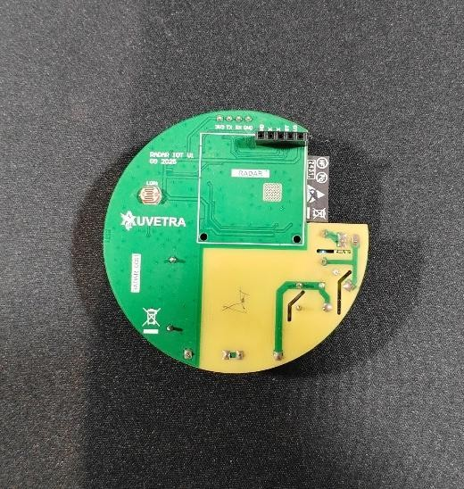
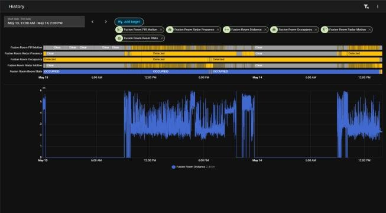
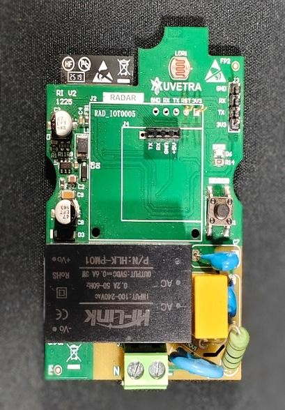
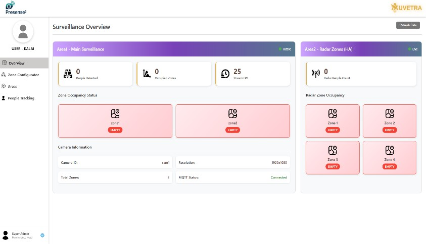
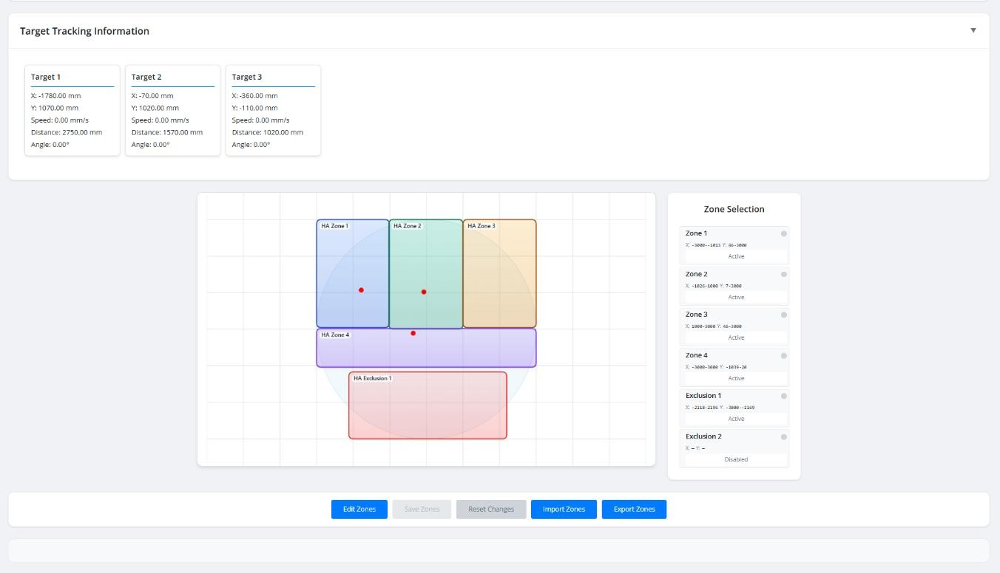

We designed, built and deployed a radar-based presence detection system that overcomes the limitations of PIR and industrial radar — compact, customizable, and deeply integrated across residential, commercial and industrial environments. See how we built and deployed it ↓
To create a next-generation radar-based presence detection system that overcomes the fundamental limitations of PIR and industrial radar sensors — compact, affordable and highly customizable, with millimeter-wave sensing that detects even motionless occupants and deep integration across cloud, voice and building-automation ecosystems.
Eliminated PIR false-negatives. Detects both static (stationary) and moving human presence using millimeter-wave radar — even for motionless occupants.
Consumer-grade, not industrial-bulk. Overcame bulky, expensive industrial radar with a compact, affordable, highly customizable device.
Cloud & voice integrated. Integrated with AWS and Amazon Alexa for voice and cloud control, plus a mobile provisioning app for Wi-Fi setup and remote management.
5–6 m circular coverage. Suitable for standard room deployments.
Custom protocol middleware. Built dedicated BACnet and KNX integration layers tailored to residential, commercial and industrial environments, plus open-source automation platform support.
Delivered as a custom PCB radar device paired with a web dashboard for live presence visualization — validated across residential and commercial room deployments.


Multi-target tracking. Detects and counts up to 10 simultaneous occupants — enabling true occupancy density monitoring for commercial spaces.
Dedicated Zone Configurator. Define custom spatial zones for granular control logic based on location within a room.
Retained all V1 capabilities. Static/moving presence, AWS & Alexa integration, mobile provisioning, open-source automation support, BACnet/KNX control and 5–6 m detection radius.
Direct load control output. Independently actuates connected devices based on occupancy rules — no additional controllers required.
Shipped as a Version 2 custom PCB with a web dashboard and a dedicated Zone Configurator — enabling real-time multi-occupant tracking and per-zone automation logic.



We designed the PCBs, wrote the firmware and built the apps and cloud, then deployed the radar in residential, commercial and industrial rooms. V2 came straight out of what customers asked for.
Discovery. Customers told us PIR sensors missed people sitting still, and that industrial radar was too bulky and expensive to fit in a normal room.
Fit to the customer's stack. Integrated with whatever each site already used: BACnet/KNX building systems, Home Assistant, Alexa or AWS. A mobile app handled Wi-Fi setup on-site.
Iterated into V2. Commercial customers wanted headcounts and per-zone control, so V2 added tracking of up to 10 occupants, a zone configurator and direct load output with no extra controllers.
Supportable in the field. OTA firmware updates and remote management let us improve deployed devices without a site visit.